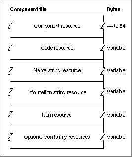
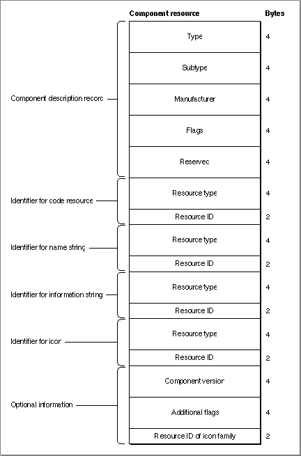

Resources
This section describes the resource you use to define your component. If you are developing a component, you should be familiar with the format and content of a component resource.The Component Resource
A component resource (a resource of type'thng') stores all of the information about a component in a single file. The component resource contains all the information needed to register a code resource as a component. Information in the component resource tells the Component Manager where to find the code for the component.If you are developing an application that uses components, you do not need to know about component resources.
If you are developing a component or an application that registers components, you should be familiar with component resources. The Component Manager automatically registers any components that are stored in component files in the Extensions folder. The file type for component files must be set to
'thng'. If you store your component in a component file in the Extensions folder, you do not need to create an application to register the component.The Component Manager provides routines that register components. The
RegisterComponentfunction registers components that are not stored in resource files. TheRegisterComponentResourceandRegisterComponentResourceFilefunctions register components that are stored as component resources in a component file. If you are developing an application that registers components, you should use the routine that is appropriate to the storage format of the component. For more information about how your application can register components, see "Registering Components" beginning on page 6-55.This section describes the component resource, which must be provided by all components stored in a component file. Applications that register a component using the
RegisterComponentfunction must also provide the same information as that contained in a component resource.The
- IMPORTANT
- For compatibility with early versions of the Component Manager, a component resource must be locked.
ComponentResourcedata type defines the structure of a component resource. (You can also optionally append to the end of this structure the information defined by theComponentResourceExtensiondata type, as shown in Figure 6-5 on page 6-81.)ComponentResource = RECORD cd: {registration information} ComponentDescription; component: ResourceSpec; {code resource} componentName: ResourceSpec; {name string resource} componentInfo: ResourceSpec; {info string resource} componentIcon: ResourceSpec; {icon resource} END;A resource specification record, defined by the data type
Field Description
cd- A component description record that specifies the characteristics of the component. For a complete description of this record, see page 6-50.
component- A resource specification record that specifies the type and ID of the component code resource. The
resTypefield of the resource specification record may contain any value. The component's main entry point must be at offset 0 in the resource.componentName- A resource specification record that specifies the resource type and ID for the name of the component. This is a Pascal string. Typically, the component name is stored in a resource of type
'STR '.componentInfo- A resource specification record that specifies the resource type and ID for the information string that describes the component. This is a Pascal string. Typically, the information string is stored in a resource of type
'STR '. You might use the information stored in this resource in a Get Info dialog box.componentIcon- A resource specification record that specifies the resource type and ID for the icon for a component. Component icons are stored as 32-by-32 bit maps. Typically, the icon is stored in a resource of type
'ICON'. Note that this icon is not used by the Finder; you supply an icon only so that other components or applications can display your component's icon in a dialog box if needed.ResourceSpec, describes the resource type and resource ID of the component's code, name, information string, or icon. The resources specified by the resource specification records must reside in the same resource file as the component resource itself.ResourceSpec = RECORD resType: OSType; {resource type} resId: Integer; {resource ID} END;You can optionally include in your component resource the information defined by theComponentResourceExtensiondata type:ComponentResourceExtension = RECORD componentVersion: LongInt; {version of component} componentRegisterFlags: LongInt; {additional flags} componentIconFamily: Integer; {resource ID of icon } { family} END;
Field Description
componentVersion
The version number of the component. If you specify thecomponentDoAutoVersionflag incomponentRegisterFlags, the Component Manager must obtain the version number of your component when your component is registered. Either you can provide a version number in your component's resource, or you can specify a value of 0 for its version number. If you specify 0, the Component Manager sends your component a version request to get the version number of your component.componentRegisterFlags- A set of flags containing additional registration information. You can use these constants as flags:
CONST componentDoAutoVersion = 1; componentWantsUnregister = 2; componentAutoVersionIncludeFlags = 4;You store a component resource, along with other resources for the component, in the resource fork of a component file. Figure 6-4 shows the structure of a component file.
- Specify the
componentDoAutoVersionflag if you want the Component Manager to resolve conflicts between different versions of the same component. If you specify this flag, the Component Manager registers your component only if there is no later version available. If an older version is already registered, the Component Manager unregisters it. If a newer version of the same component is registered after yours, the Component Manager automatically unregisters your component. You can use this automatic version control feature to make sure that the most recent version of your component is registered, regardless of the number of versions that are installed.- Specify the
componentWantsUnregisterflag if you want your component to receive an unregister request when it is unregistered.- Specify the flag
componentAutoVersionIncludeFlagsif you want the Component Manager to include thecomponentFlagsfield of the component description record when it searches for identical components in the process of performing automatic version control for your component. If you do not specify this flag, the Component Manager searches only thecomponentType,componentSubType, andcomponentManufacturerfields.- When the Component Manager performs automatic version control for your component, it searches for components with identical values in the
componentType,componentSubType, andcomponentManufacturerfields (and optionally, in
thecomponentFlagsfield). If it finds a matching component, it compares version numbers and registers the most recent version of the component. Note that the setting of thecomponentAutoVersionIncludeFlagsflag affects automatic version control only and does not affect the search operations performed byFindNextComponentandCountComponents.componentIconFamily- The resource ID of an icon family. You can provide an icon family in addition to the icon provided in the
componentIconfield. Note that members of this icon family are not used by the Finder; you supply an icon family only so that other components or applications can display your component's icon in a dialog box if needed.Figure 6-4 Format of a component file

You can also store other resources for your component in your component file. For example, you should include'FREF','BNDL', and icon family resources so that the Finder can associate the icon identifying your component with your component file. When designing the icon for your component file, you should follow the same guidelines as those for system extension icons. See Macintosh Human Interface Guidelines for information on designing an icon. See the chapter "Finder Interface" in Inside Macintosh: Macintosh Toolbox Essentials for information on the'FREF'and'BNDL'resources.Figure 6-5 shows the structure of a component resource.
Figure 6-5 Structure of a compiled component (
'thng') resource